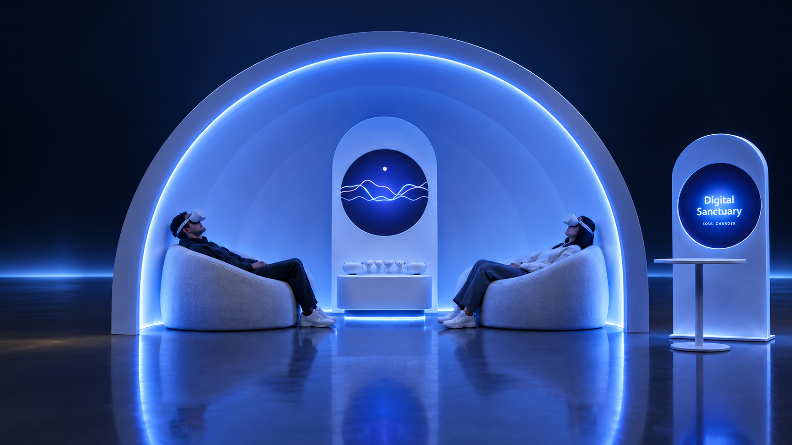
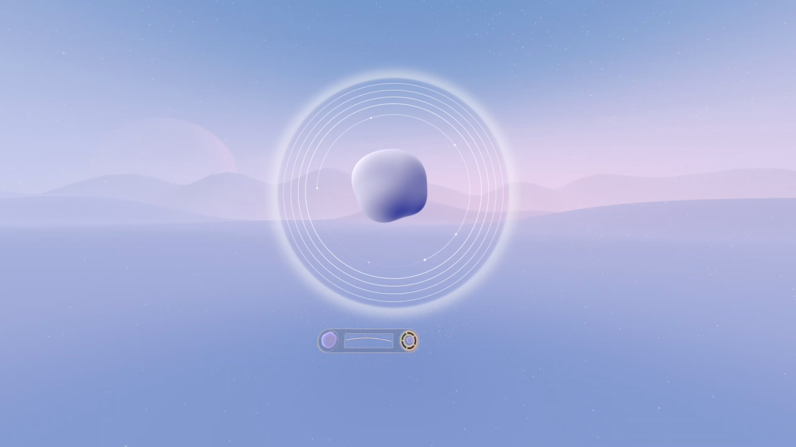
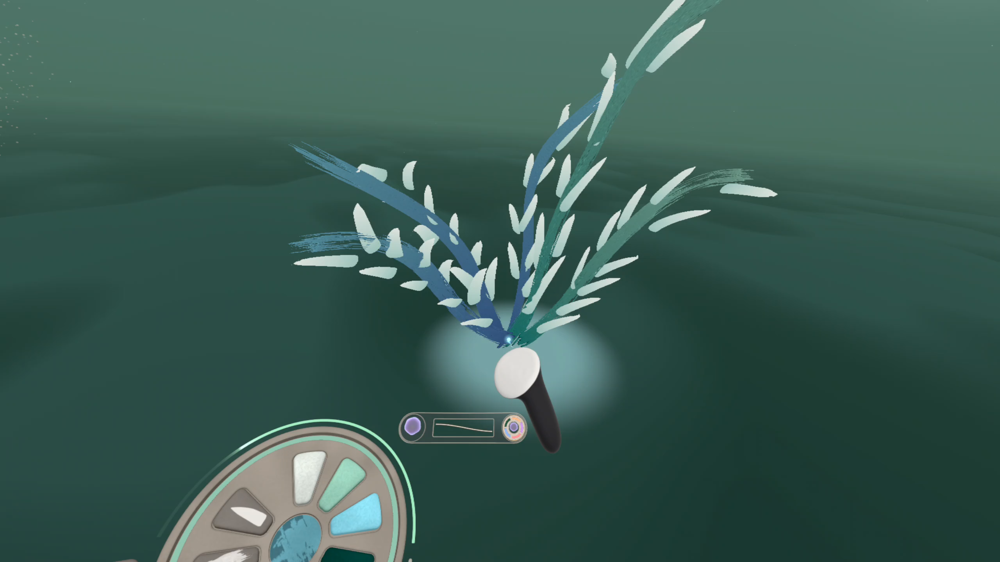

A sanctuary inside the fair: a half dome of light for two people. Visitors recline in two seats facing the hall while a central circular screen shows their brain activity live, and a reception point welcomes the queue. Designed specifically for GITEX.




Technical requirements
Each visitor chooses one practice. A headset carries them inside, an EEG headband reads their brain activity the whole time to measure their state of calm and relaxation, and the circular screen shows it live to the people waiting. At the end, every visitor receives a result with simplified data and a personalised artwork. It stays private: no data is kept beyond the live experience.

01 · VR Breathwork · 3 min
A guided breathing practice. A pacing ring sets the rhythm, and the light rises and falls with every inhale and exhale. In three minutes the breath slows and the body settles.

02 · VR Painting · 3 min
Drawing in the air. The visitor paints around themselves with a brush of light, choosing colours from a palette held in the other hand. The mark is made, and then it goes.